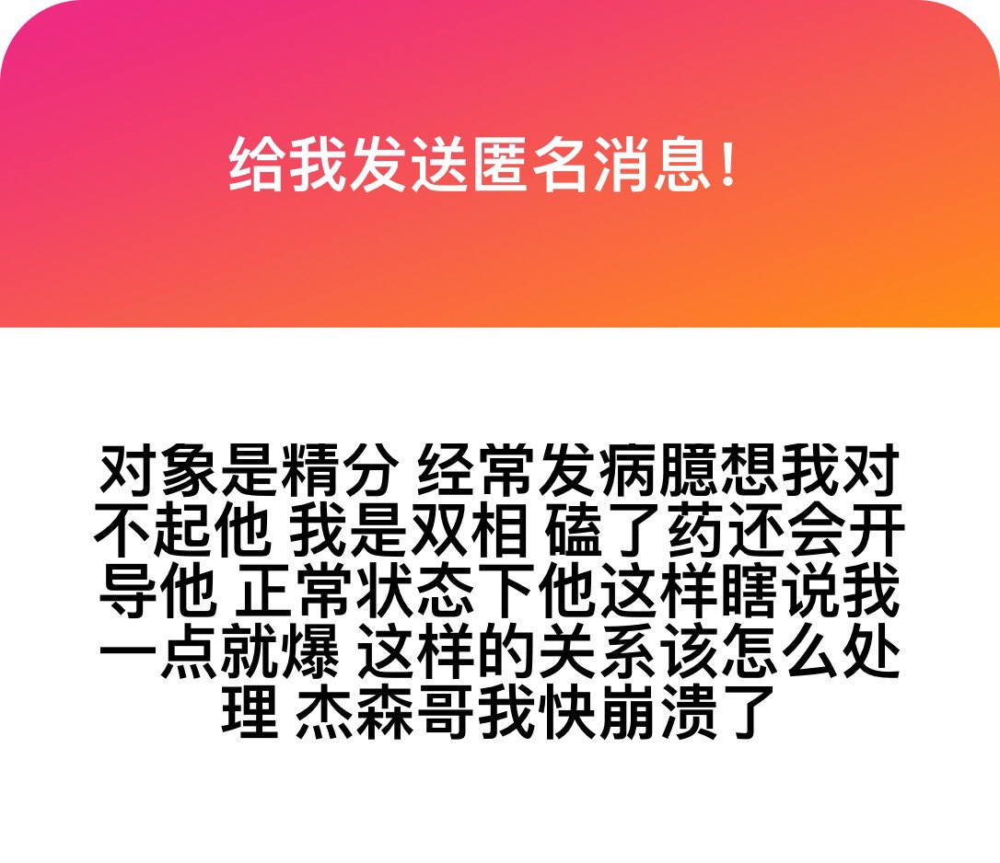

实话有时候挺难听的，你俩各自都这个逼样了还处什么对象，也别聊什么爱不爱情的，你们的生活里可能只有叫外卖嗑药自残吵架。这种关系没有任何处理方式，首先全部变成正常人，其次这事不可能。
想想你们连自理能力都没有，在一起只是纯粹的互相泄愤泄欲仅此而已，但只是我觉得我不需要安慰你，你自己也知道这事的本质，你只是害怕一个人更孤独的承担起另一半的自己，和找我算命的朋友一样，再怎么算，都要你自己去做。
这话有点说过了但是我也没招，我也没办法处理，双向的人往往是确实在考虑事情的，但是慧多福少是挺可悲的一件事，你能看到结局有能怎么样，让未来可能会成为悲痛的回忆提前到来。
精神分裂的人不配拥有爱情，长得漂亮的精神分裂患者更是一样。
想想你们连自理能力都没有，在一起只是纯粹的互相泄愤泄欲仅此而已，但只是我觉得我不需要安慰你，你自己也知道这事的本质，你只是害怕一个人更孤独的承担起另一半的自己，和找我算命的朋友一样，再怎么算，都要你自己去做。
这话有点说过了但是我也没招，我也没办法处理，双向的人往往是确实在考虑事情的，但是慧多福少是挺可悲的一件事，你能看到结局有能怎么样，让未来可能会成为悲痛的回忆提前到来。
精神分裂的人不配拥有爱情，长得漂亮的精神分裂患者更是一样。
